Step by step. The screenshots come from the prototype, signed in as Ana Ribeiro (Admin at Example Builders, the general contractor) for sending and awarding, and as Tom Reilly (Admin at Northfield Framing & Siding) for bidding and subcontracting. The link page is what Bay State Drywall sees, without an account.
Send a bid
What it is for: inviting subcontractors to bid on a scope of work of a job.
Who can do it
Anyone with Run bids and award (default roles: Admin and Project manager).
Open Daily › Bids (or New bid on a job page). The list has tabs Open, Ready to award, Drafts, Awarded and All.

- Click New bid.
- Fill in the package:
- Scope of work: the job and a name (e.g. Framing and drywall).
- Cost codes to bid: check the ones that apply (they come from your catalog and suppliers) or type others. Each one becomes a row in the leveling.
- Included and Excluded scope, one item per line; notes (work hours, site access, site walk).
- Drawings: the PDFs.
- Dates: bid due date and time, expected start and finish.
- Budget and requirements: an optional budget and whether to show it, minimum GL insurance, license, workers' comp, mandatory site walk, and whether the awarded company can subcontract.
- Invitees: subcontractors from your Contacts. Each one says On KORbuild or Gets a link.
- Click Send invitations. If something is missing, the draft is saved and the page says what is missing.
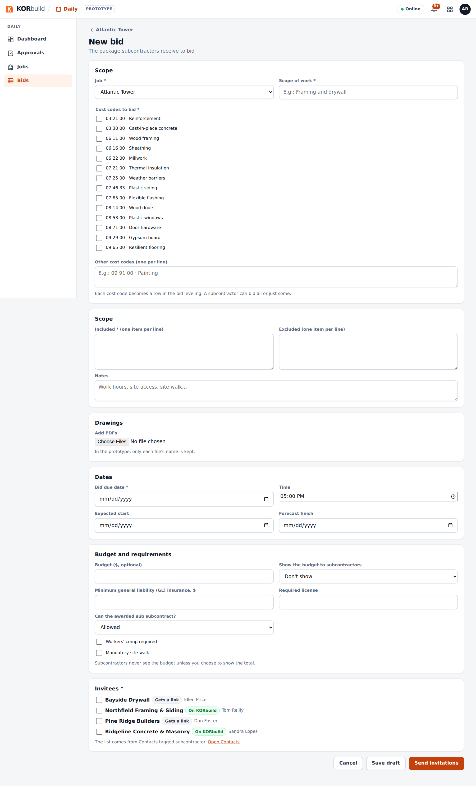
Follow the invitees
The bid page opens on Invitees: each company, how it receives (KORbuild or link), its status (Invitation sent, Viewed, Will bid, Declined with the reason, Bid submitted), its latest bid and when it viewed the invitation.
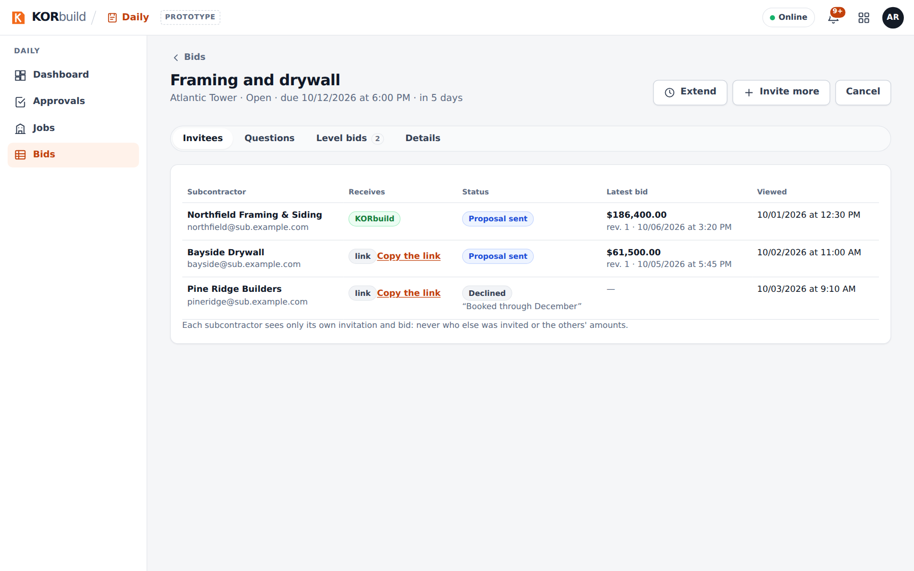
- Extend: a new due date, after the current one; invitees can bid until then.
- Invite more: subcontractors not invited yet.
- Cancel: with a reason; invitees are notified.
- Copy the link: for an invitee without an account (in the product, it goes by email).
Answer questions
The Questions tab has one conversation per invitee, and the count of questions without an answer.
- Click Reply under a question.
- Write the answer and choose All invitees (the question goes along, without saying who asked) or Only the one who asked.
Use Notify all for an addendum, a date change or a new sheet.
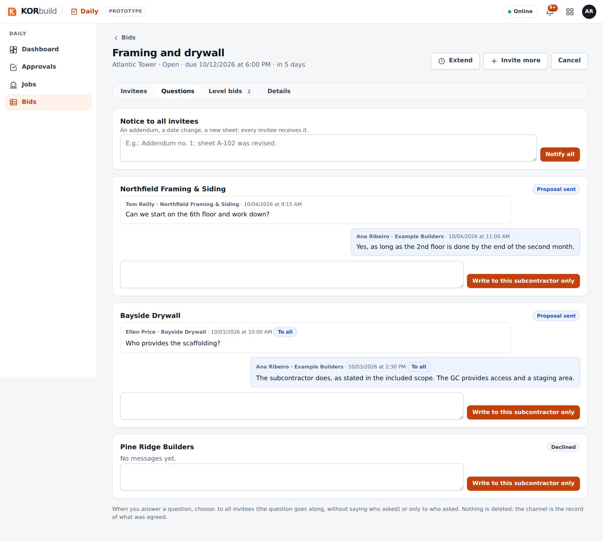
Level the bids and award
Level bids shows one column per bid and one row per cost code, next to your budget:
- in green, the lowest amount of each cost code;
- not bid when a company left a cost code without a price — compare totals only between complete bids;
- duration, exclusions (⚠ when an exclusion is in your included scope), date and proposal number.

Click Award on the chosen column. The confirmation warns about cost codes not bid and exclusions in scope. After Award, the bid is closed and never changes; the others are told they were not selected, without the amount.
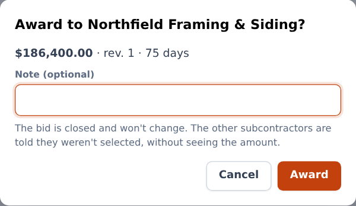
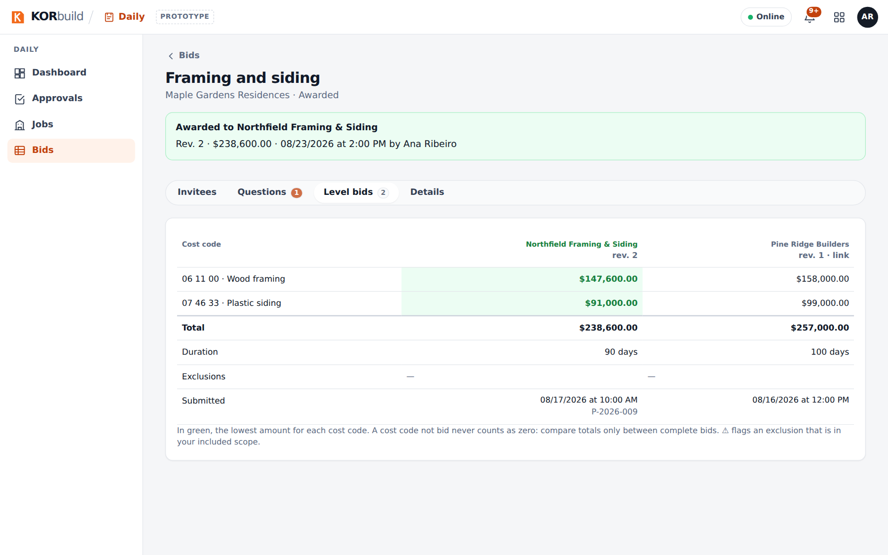
Bid as a subcontractor
What it is for: answering an invitation and submitting your bid without leaving KORbuild.
Who can do it
Anyone with Respond to invitations and submit bids (default roles: Admin and Project manager), in a company with Measure.
- Open Measure › Invitations (the bell also tells you). Open the invitation: the package, the due date, the budget if the contracting company chose to show it.
- Click I'll bid — KORbuild creates a project in Measure with the contracting company, the address and the due date — or Decline, with an optional reason the contracting company sees.
- Measure, price and issue the proposal in the project, as usual.
- In Issued proposals, click Submit through the platform. The dialog shows how the lines go by cost code, what goes as other items and what is not bid; fill in the duration and the exclusions and submit.
- To change anything, issue again and submit: it becomes the next revision, until the due date.
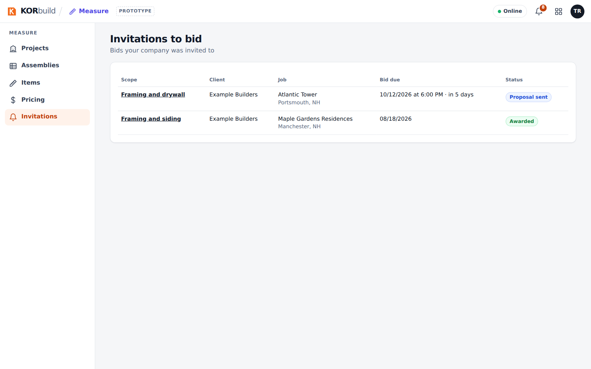
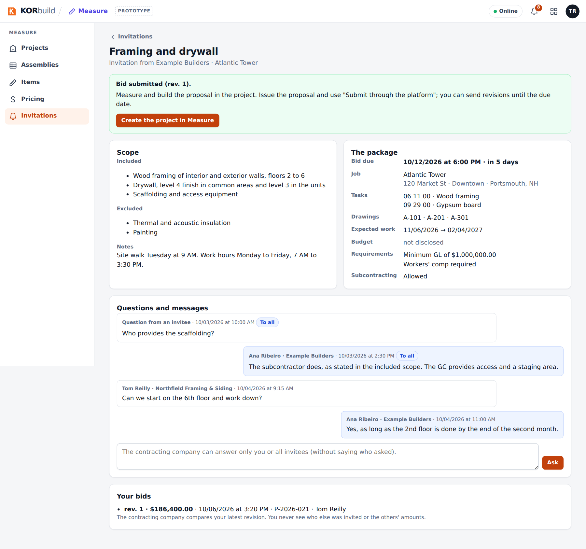
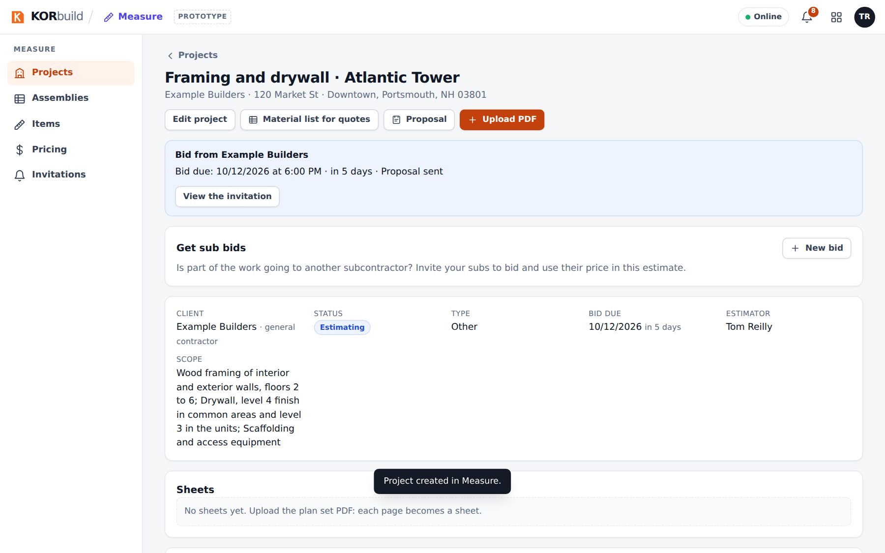
When you win, the invitation says You were awarded this bid and offers Create job from this project: the job is created already linked to the contracting company's job.
The channel
Before the award, ask on the invitation page (Questions and messages). After the award, the conversation continues as the job channel, on the job page of both companies.
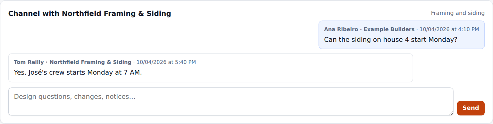
Subcontracting
A subcontractor can hire another one for part of its work, with the same screens.
- While estimating: on your Measure project, Get sub bids › New bid. The due date must be before your own. In Level bids, Use in my estimate puts the sub's price into your project proposal (as other items, with your markups). You award only after you win and create the job.
- After winning: on your job page, New bid.
If the company that hired you asked for approval, Award sends it a request: it sees only the company you chose, never the amount, and approves or declines. If it does not allow subcontracting, the bid is not sent.
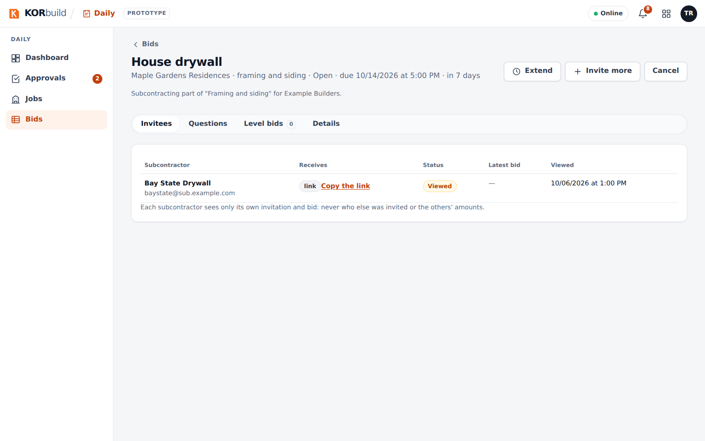
The general contractor then sees who is on site from the whole chain, marked sub-tier, hired by…, without amounts.
The link page (without an account)
A subcontractor without KORbuild opens the private link and, without signing in: sees the package, answers I'll bid or Decline, asks questions and submits the bid with the PDF, the total (and, optionally, the amount by cost code), the duration and the exclusions.
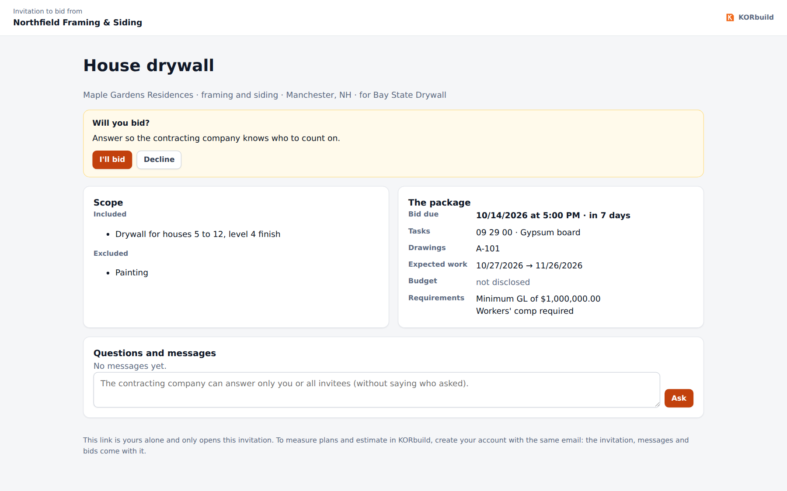
Messages and alerts
| Message | What it means | What to do |
|---|---|---|
| Missing: … | The draft is not complete. | Fill in what is listed and send. |
| The bid due date has passed. | Bids are no longer accepted. | The contracting company extends, or levels and awards. |
| The total must equal the sum of the cost code amounts. | The bid by cost code doesn't add up. | Fix the amounts or leave a cost code blank (not bid). |
| This bid came from a project still being estimated… | You can't award before winning. | Win the project and create the job first. |
| The contracting company for this job doesn't allow subcontracting. | The upstream bid does not allow it. | Talk to whoever hired you. |